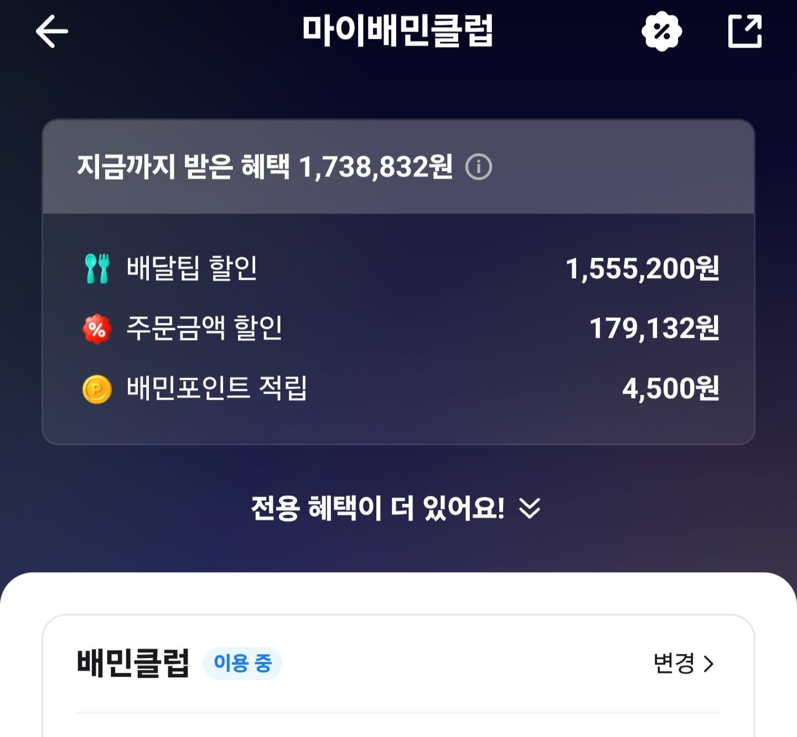
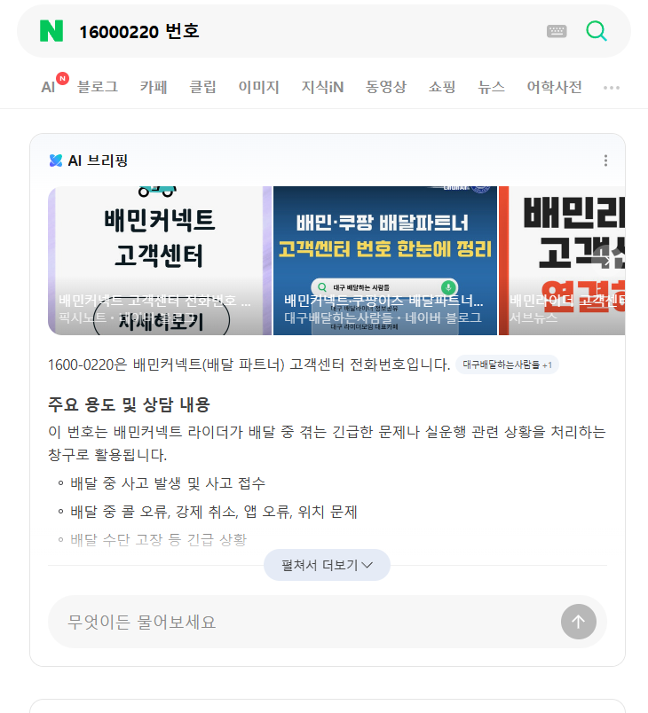
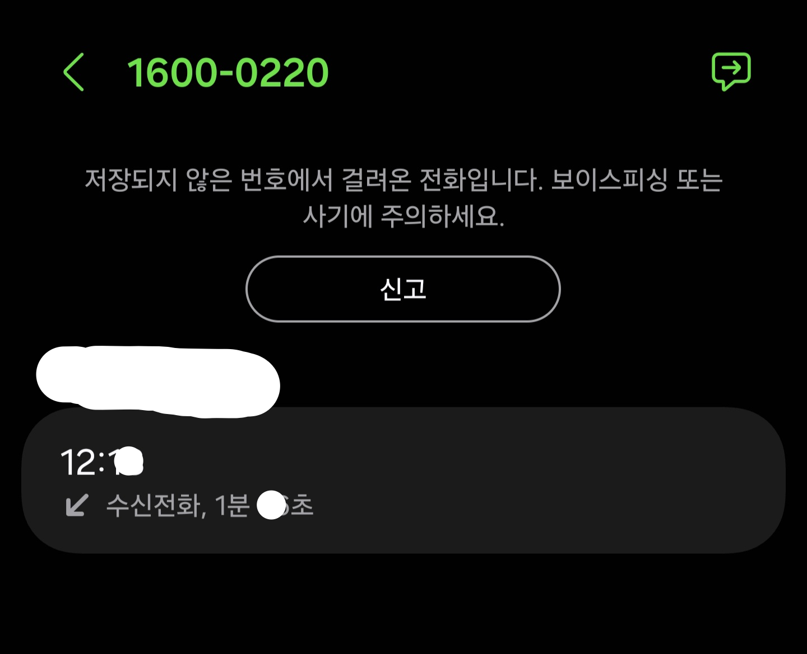
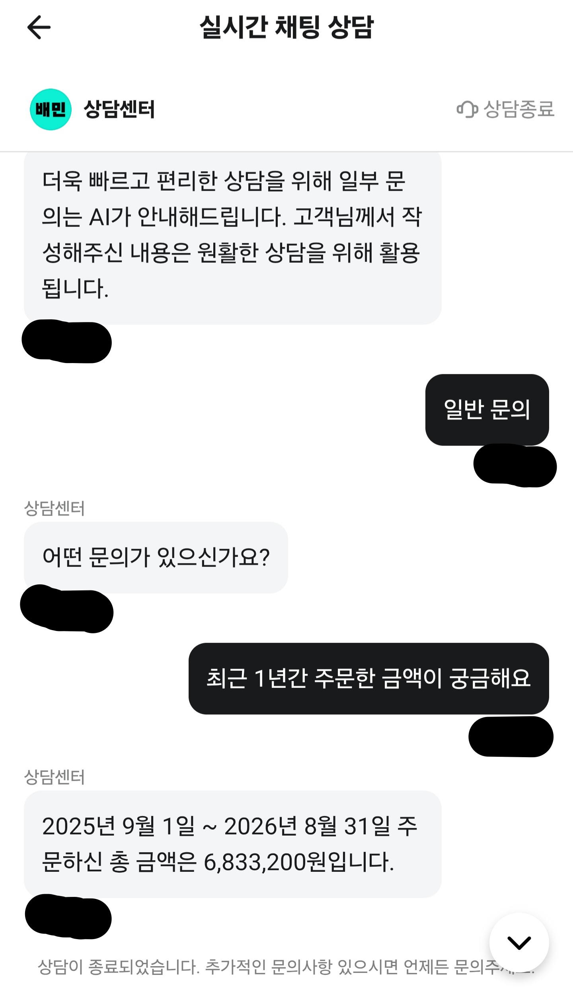

장문인데 글쓰는 재주 없음
먼저 글 쓰는 본인은 배달거지 아님
배달거지 행동 한 적도 단 한 번도 없음ㅇㅇ
그리고 강조 하는데 가장 기본 적인
내가 받을 집 주소 잘못 쓴 것도 아님
평소처럼 배달 시킴
문앞에 두었다는 배달 어플 미리보기 알람보고
1분 정도 뒤에 문 열고 확인함 (문 바로 열면 배달기사랑 마주치는 경우가 있음)
음식이 없음
배달 어플 눌러서 배달 완료 사진 봄
우리집 현관문이 아님
문의하기, 다른 주소지로 배달되었어요 누름
상담원 연결하기,라이더에게 직접 전화하기
2 가지 선택지가 있었음
배달기사는 대부분 불친절 하기 때문에
상담원 연결하기 누름
상담 인원이 많아서 그런가? 아무튼
AI 상담 체팅봇? 으로 연결 됨
OO 가게의 OO 음식 주문 건 맞냐고
확인 절차 있었음, 맞다고 함
배달기사가 찍은 배달완료 사진의 현관문과
우리집 현관문과 다르냐고 물어봄
다르다고 함
배달기사가 근처에 있으니 회수해서 우리 집으로 재배달 해도 괜찮냐고 물어봄
나는 문앞에 음식 없는 거 확인하고 거의 바로 문의 했으니까
금방 올 줄 알고 그렇게 해달라고 함
10분 지났음
내가 배달기사 아직 안 왔다고 함
도로 상황에 따라 오래 걸릴 수 있다고 조금 만 더 기다려 달라고 매크로 같은 답변 뜸
5분 더 기다렸는데 배달기사가 안 옴
내가 배달 시킨 음식이 식으면 딱딱해지는 거라
음식 필요 없으니까 환불, 취소처리 해달라고 함
자신이 할 수 있는 게 아니라며 상담원(진짜사람)을 연결해주겠다고 함
진짜사람 체팅 상담원이 OO 가게의 OO 음식 주문 건 맞냐고 확인 절차 함
맞다고 하자, 또 배달기사가 지금 가고 있는 중이니 조금 만 더 기다려 달라고 함
내가 음식 다 식어서 올 꺼다 음식 받지도 않았는데 왜 환불 안되냐고 따짐
그러자 모르는 번호로 전화 옴
커넥트 고객센터레
상담원이 기어가는 목소리로 OO 가게의 OO 음식 주문 건 맞냐고 확인 절차 함
내가 맞다고 함
상담원이 음식은 아직 못 받은 상황인거죠 라고 말함
슬슬 진짜 빡침
음식 못 받았으니까 전화 받았죠 라고 화나서 말함
상담원이 배달기사에게 확인 결과 지금 가고 있으니 또 조금 만 기다려 달라고 함
음식 다 식어서 올꺼다, 음식 받지도 않았는데 왜 환불이 안되냐고 언성 높이니까
상담원이 분명 환불 처리 해주겠다고 말해서
내가 알겠다고 하고 전화 끊음
배달기사한테 배달어플 안심콜로 전화 옴
사과도 없이 저 지금 문 앞인데 나와보실레요? 라고 말함
내가 커넥트 고객센터에 환불 처리 해달라고 했으니까
음식 먹던지 말던지 알아서 하라고 말함
그러자 배달기사가 문 앞인데? 라고 말해서
우리집 문 열고 나갔음 당연히 배달기사 없고 음식도 없음
화나서 배달기사 전화 끊음
배달어플 보니 상담원 체팅이 종료 안 되어있어서
확인해보니까 엄청 긴 장문의 메시지가 와있었음
요약하자면, 확인 결과 배달 기사는 정확하게 배달 했다는 점
음식이 식었다는 이유로 환불은 어렵다는 내용이였음
내가 음식 못 받았다고, 음식 주던가요 체팅 보내니까
체팅 상담원이 배달기사가 찍은 배달완료 사진의 현관문과
우리집 현관문과 다르냐고 물어봄
내가 우리집 현관문 호수 나오게 찍은 사진 이랑
지금 찍은거에요 라고 체팅 보냄
그제서야 음식 품질 저하?로 인해
환불 처리 도와드려도 괜찮겠냐고 물어봐서
결론은 환불 처리 겨우 해줌
내가 시킨 음식은 당연히 다른 집 주소에 가 있는 배달기사가 가지고 있으니까
음식 안 받았고 배달 어플 쪽에 보상 같은거 요구하지도 않았고 보상도 안 받았음
배달거지 관련 글이나 영상보면
배달기사랑 자영업자가
배달 어플 회사 직원은
무조건 소비자,배달거지 편이다 라고
댓글 달아서 쓰는 글임
내가 배달 어플에 나름 돈 많이 썼는데
배달 어플 상담원이 내 편 안 들어주고 배달거지 비슷하게 취급 받아서 삐진 것도 맞음
본인 혈액형 A형이라 잘 삐지고 마음에 잘 담아 둠
솔직히 내가 배달거지 라고 믿던 말던 상관없음
물론 내가 잘했다는 것도 아님
배달어플 직원 쪽 대응이 이제 바뀌었다 라는 사실을 알려주고 싶었음
아니 근데 처음부터 딸배한테 전화하면 되는거 아니야?
상담원한테 하면.
너->상담원 ->배달기사->상담원->너 순으로 연락갈텐데
음식 식는게 걱정이면 다이렉트로 딸배한테 연락해서 주소 확인 해보라고 하고, 본인이 잘못적었던가/배달원이 잘못봤든가 즉시 확인 하면 덜 식기전에 처리 되잖아.
게다가 [문앞에 뒀다는 알람보고 1분만에 나간]거라며?
그러면 아직 딸배는 오배송한 주소 근처일텐데 더 빨리 음식 회수하고 재배달 했을거 아니야?
그냥 딸배한테 전화거는거 쫀거 아님? 일처리 귀찮게 하면서 씩씩거리면서 사네 ㅋㅋ